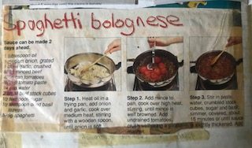

Spaghetti Bolognese

A Recipe Mum Cut Out From A Magazine Years Ago
Tasty beef on al dente pasta with a tomato and basil sauce.
A dinner that will last all week!
Ingredients
- Spaghetti pasta
- 500g beef mince
- Tomato paste
- Tinned tomoatoes
- Garlic
- Brown onion
- Red capsicums
- Mushrooms
- Dried basil
- Beef stock cube
- Tsp sugar
Method
- Place pasta on to boil
- Heat oil and add chopped onion and crushed garlic. Cook over medium heat
- Add mince, cook over high heat until mince is browned.
- Pour in undrained tomatoes and crush in until well mixed
- Add the sliced capsicum and mushrooms
- Stir in paste, water, crumbled stock cube, sugar and basil
Pro tip: Use lamb mince, it's nicer
Back to main menu